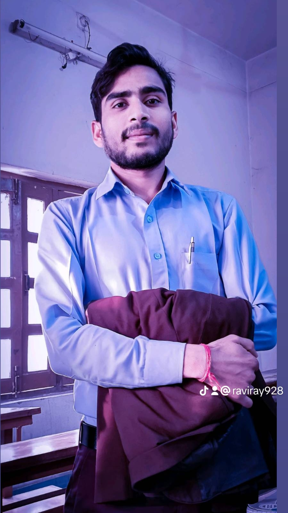

Hi, I'm Ravi Ray
Computer Science Student
Aspiring developer currently studying at the University of Northampton, UK.
Get in TouchAbout Me

I am currently pursuing a Bachelor's degree in Computer Science at the University of Northampton, UK. As an enthusiastic learner, I am continuously building my knowledge in programming and web technologies. I enjoy taking on projects that challenge me and contribute to my growth as a developer.
Throughout my academic journey, I have worked on various course-related and personal projects to develop my practical skills. I have a keen interest in web development and software engineering.
My current technical skill set includes:
- HTML5 & CSS3
- Basic JavaScript
- Python Programming
- Database Fundamentals
- Git Version Control